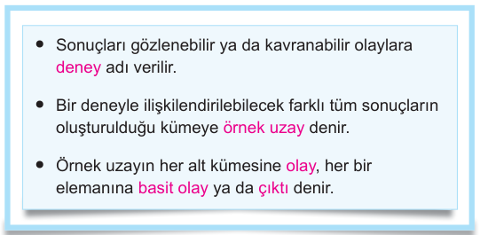
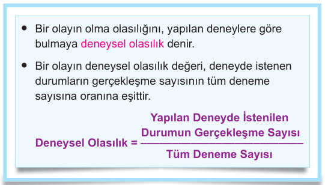

3. Hilesiz bir madeni para 20 defa havaya atıldığında 8 kez
yazı, 12 kez tura geliyor.
a) Yazı gelme olayının deneysel olasılığı kaçtır?
b) Tura gelme olayının deneysel olasılığı kaçtır?
4. A ve B takımlarının yaptığı 100 maçın 25'ini A takımı,
35'ini B takımı kazanmış geri kalan maçlarda da berabere
kalmışlardır.
Buna göre, yapılacak olan 101. maçta berabere kalma
olayının deneysel olasılığı kaçtır?
1. Bir zar atılması deneyinde üst yüze gelen durumlar
için aşağıdakilerin eleman sayısını bulunuz.
a) Olası tüm çıktı sayısı
b) Tek gelme olayının çıktı sayısı
c) Asal gelme olayının çıktı sayısı
d) Tek ve asal gelme olayının çıktı sayısı
2. 10 kız 15 erkeğin bulunduğu bir sınıfta rastgele bir
öğrenci seçilmesi deneyinde aşağıdaki her bir durum
için çıktı sayısını bulunuz.
a) Cinsiyete göre çıktı sayısı
b) Gözlük kullanımına göre çıktı sayısı
c) Öğrencilerin kim olduğuna göre çıktı sayısı
3. a) 25 b) 35 4. 25
Olasılığın Temel Kavramları Deneysel Olasılık
1. a) 6 b) 3 c) 3 d) 2 2. a) 2 b) 2 c) 25

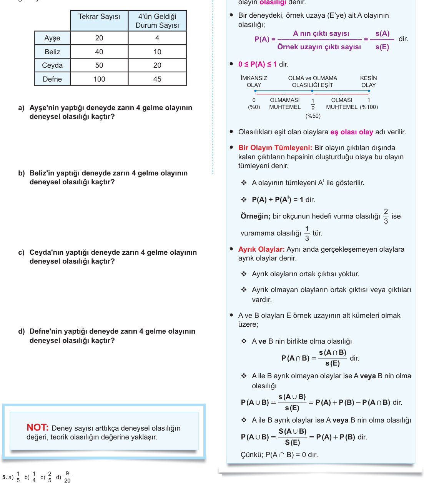
5. Aşağıdaki tabloda Ayşe, Beliz, Ceyda ve Defne isimli
öğrencilerin düzgün birer zar attıkları deneye ait bilgiler
verilmiştir. Örneğin Ayşe zarı 20 kez atmış, zar 4 kez 4
gelmiştir.
Teorik Olasılık
• Bir deneydeki bir olayın olabilirliğinin ölçüsüne bu
olayın olasılığı denir.


6. Bir basamaklı her doğal sayı birer topa yazılıp bir
torbaya atılıyor. Torbadan bir top çekilmesi deneyinde;
a) Tek sayı gelme olasılığı nedir?
b) Çift sayı gelme olasılığı nedir?
c) Asal sayı gelme olasılığı nedir?
d) Yukarıdaki üç olaydan hangileri eş olasıdır?
e) Yukarıdaki üç olaydan hangi olaylar ayrıktır?
f) Yukarıdaki üç olaydan hangileri birbirinin tümleyenidir?
g) Negatif tamsayı gelme olasılığı nedir?
h) Rakam gelme olasılığı nedir?
ı) Tek ve çift gelme olasılığı nedir?
i) Tek veya çift gelme olasılığı nedir?
j) Çift ve asal gelme olasılığı nedir?
k) Çift veya asal gelme olasılığı nedir?
l) Tek ve asal gelme olasılığı yüzde kaçtır?
m) Tek veya asal gelme olasılığı yüzde kaçtır?
7. Alfabemizdeki harflerin her birinin yazılı olduğu özdeş
kartlar bir torbaya atılıyor. Torbadan bir kart çekiliyor.
Çekilen kartın;
a) Sesli harf olma olasılığı nedir?
b) Sessiz harf olma olasılığı nedir?
c) Sesli ve sessiz harf olma olasılığı nedir?
d) Sesli veya sessiz harf olma olasılığı nedir?
8. İki zar aynı anda atılıyor. (İki zar için muhtemel durumlar,
tablolar ile görülebilir.)
Buna göre, zarların üst yüzeyine gelen sayıların
a) Birinin 1 diğerinin 2 olması olasılığı nedir?
b) Aynı olma olasılığı nedir?
c) Toplamların 4 ten küçük olması olasılığı nedir?
d) Toplamların 4 ve 4 ten büyük olması olasılığı nedir?
e) Çarpımlarının çift olması olasılığı nedir?
f) Farklarının mutlak değerinin 5 olmaması olasılığı
nedir?
g) Çarpımlarının tek ve sayıların aynı olması olasılığı
nedir?
h) Toplamlarının 3 ten küçük veya çarpımlarının 30 dan
büyük olması olasılığı nedir?
9. Bir okçunun hedefi vurma olasılığı %30 dur.
Buna göre bu okçunun hedefi vuramama olasılığı
yüzde kaçtır?
10. Bir sınıftaki kız sayısı, erkek sayısından 2 eksiktir. Sınıf
listesinden rastgele bir kişi seçiliyor.
• Seçilen kişinin gözlük kullanmayan kız öğrenci olması
olasılığı 7
2 dir.
• Sınıfta erkek veya gözlüklü 20 kişi vardır.
Buna göre, seçilen kişinin gözlüklü ve kız olma
olasılığı kaçtır?
6. a) 12 b) 12 c) 5
2 d) Tek ile Çift e) Tek ile Çift f) Tek ile Çift g) 0 h) 1 ı) 0
i) 1 j)
110 k) 45 l) %30 m) %60 7. a) 829 b) 2129 c) 0 d) 1
8. a) 118 b) 16 c) 112 d) 1112 e) 34 f) 1718 g) 112 h) 118 9. %70 10. 528

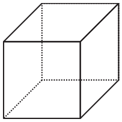
11. Bir kutuda bulunan 10 özdeş topun 2 si sarı, 3 ü mavi ve
5 i beyazdır.
Buna göre,
a) Bu kutudan rastgele alınan bir topun sarı olma olasılığı
kaçtır?
b) Bu kutudan rastgele alınan bir topun beyaz olma
olasılığı kaçtır?
c) Bu kutuda rastgele alınan bir topun sarı veya beyaz
olma olasılığı kaçtır?
12. Bir yüzeyi beyaz, iki yüzeyi mavi ve üç yüzeyi kırmızı olan
bir küp atılıyor.
Buna göre,
a) üst yüze mavi gelme olasılığı kaçtır?
b) üst yüzeye kırmızı gelme olasılğı kaçtır?
c) üst yüze beyaz gelmeme olasılığı kaçtır?
13. Aşağıdaki küpün A köşesinde bulunan bir karınca sadece
küpün ayrıtları üzerinde hareket edecektir. Karınca geçtiği
noktadan tekrar geçmeden 2 ayrıt uzunluğu kadar yol
gidecektir.
A
B
Karınca gideceği yolu rastgele seçecek olursa
hareketinin sonunda B köşesine gelme olasılığı
kaçtır?
14. 20 kişilik bir sınıfta öğrencilerin 12 tanesi kız öğrencidir.
Kız öğrencilerin 8’i erkek öğrencilerin 6 sı matematik
dersinden geçmiştir.
Yukarıdaki verilere göre tabloyu doldurunuz.
Matematik
dersinden geçen
Matematik
dersinden kalan
Kız 8
Erkek
Buna göre, bu sınıftan rastgele seçilen bir öğrencinin
a) Matematik dersinden kalan erkek öğrenci olma olasılığı
kaçtır?
b) Matematik dersinden kalan kız öğrenci olma olasılığı
kaçıtır?
c) Erkek veya matematik dersinden kalan öğrenci olma
olasılığı kaçtır?
13. 3
1 14. a) 10
1 b) 5
1 c) 5
11. a) 5
1 b) 2
1 c) 10
7 12. a) 3
1 b) 2
1 c) 6


17. Bir futbol takımının ilk maçında kazanma, kaybetme
ve berabere kalma olasılıkları birbirine eşit, ikinci
maçında yenilme olasılığı sıfır olup berabere kalma ve
kazanma olasılıkları birbirine eşittir.
a) Bu futbol takımının ilk maçını kazanma olasılığı kaçtır?
b) Bu futbol takımının ilk maçını kazanamama olasılığı
kaçtır?
c) Bu futbol takımının ikinci maçında kazanma olasılığı
kaçtır?
18. Bir satranç turnuvasına bir okuldan A, B ve C adlı
öğrenciler, başka bir okuldan D, E ve F adlı öğrenciler
katılmıştır. Her maçta farklı iki okuldan birer öğrenci
karşılaşacaktır.
Her maçı oynayacak oyuncular kura ile belirlendiğine
göre, ilk maçı A ve F oyuncularının oynama olasılığı
kaçtır?
15. İçinde 3 mavi ve 4 kırmızı bilye bulunan bir torbadan
rastgele seçilen 2 bilyenin
a) İkisinin de kırmızı gelme olasılığı kaçtır?
b) 1 mavi 1 kırmızı gelme olasılığı kaçtır?
c) En az birinin mavi olma olasılığı kaçtır?
16. İçinde 4 mavi, 3 kırmızı ve 2 yeşil top bulunan bir
torbadan rastgele seçilen 3 topun
a) 2 mavi, 1 kırmızı gelme olasılığı kaçtır?
b) 1 mavi, 1 kırmızı ve 1 yeşil gelme olasılığı kaçtır?
c) Birincinin mavi, ikincinin kırmızı ve üçüncünün yeşil
gelme olasılığı kaçtır?
17. a) 3
1 b) 23 c) 12 18. 3
15. a) 27 b) 47 c) 57 16. a) 314 b) 27 c) 121

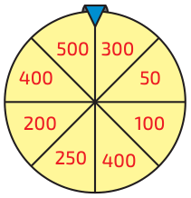
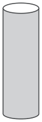
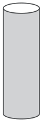

1. Nehir 24 kez okula gittiğinde bunun 8 tanesinde bisikletle,
10 tanesinde servisle, 6 tanesinde ise babasıyla gitmiştir.
Buna göre, Nehir'in 25. okula gidişinde babasıyla
gitme olasılığı kaçtır?
A) 8
5 B) 12
5 C) 3
1 D) 4
1 E) 8
1
2. Oyun parkına giden Aysel aşağıdaki çarkı çevirdiğinde
mavi imlecin geldiği bölümün puanını alıp puan
biriktirecektir.
Çarkı çeviren Aysel'in 400 puan kazanma olasılığı
kaçtır?
A) 4
1 B) 8
1 C) 8
3 D) 4
3 E) 1
2
3.
Yukarıda verilen 6 adet sarı renkli tenis topu aşağıdaki
tüplere, her tüpe en az bir top konulacak şekilde
yerleştirilecektir.
Bu işlem rastgele yapıldığında tüplerdeki top
sayılarının soldan sağa veya sağdan sola ardışık sayı
olma olasılığı kaçtır?
A) 1
2 B) 1
3 C) 4
1 D) 5
1 E) 3
2
4. Aşağıda bir sitenin otoparkının bir kısmı verilmiştir.
Arabasını bu alana park etmek isteyen Yasin, park edilmiş
araçların karşısına aracını park etmek istememektedir.
Buna göre, Yasin'in aracını istediği yere park etme
olasılığı kaçtır?
A) 9
7 B) 3
2 C) 3
1 D) 4
3 E) 2
1
1.D 2.A 3.D 4.B

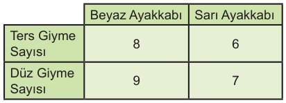
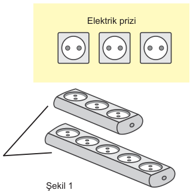

5. Ayakkabısını giyerken tersmi, düzmü giyeceğini karıştıran
Aslı biri beyaz diğeri sarı renkli olan ayakkabılarından
birini giymek için 30 kez deneme yapmıştır.
Bu denemelerin sonuçları aşağıdaki tabloda verilmiştir.
Buna göre, Aslı'nın beyaz ayakkabısını düz giyme
olasılığı kaçtır?
A) 5
2 B) 3
10 C) 5
4 D) 30
7 E) 1
6
6. Bir okuldaki öğrenciler okula otobüs, servis veya metrobüs
ile gitmektedirler. Okula servis ile giden öğrenci sayısı
otobüs ile giden öğrenci sayısının 2 katıdır. Bu okuldan
rastgele seçilen bir öğrencinin okula metrobüsle giden
öğrenci olma olasılığı 3
2 'tür.
Buna göre, okula metrobüsle giden öğrenci sayısı
servisle giden öğrenci sayısının kaç katıdır?
A) 2 B) 3 C) 4 D) 5 E) 6
7. Şekil 1’de bir odanın duvarındaki 3 elektrik prizi ve bu
odada bulunan biri 3 diğeri 5 prizli iki uzatma kablosu
gösterilmiştir. 3 prizli uzatma kablosu duvardaki prizlerden
birine Şekil 2’deki gibi takıldıktan sonra bu odada
telefonunu şarj etmek isteyen Aydın, duvar ya da uzatma
kablolarındaki prizlerden rastgele seçeceği bir prize
telefonun adaptörünü takacaktır.
Uzatma
kablosu
Uzatma
kablosu
Elektrik prizi
Şekil 2
Buna göre, Aydın’ın telefonunu şarj edebilme olasılığı
kaçtır?
A) 2
1 B) 3
1 C) 4
1 D) 3
2 E) 6
5
8. Bir mağazadaki iki kabanın satış fiyatları 1000 ve 1200 TL’dir.
Bir görevli bu kabanlardan birine %25, başka birine %x
indirim etiketi yapıştıracaktır. Görevli hangi kabana hangi
etiketi yapıştıracağına dikkat etmeyecektir.
İndirim etiketleri yapıştırıldıktan sonra üzerindeki 800 TL
ile bu mağazaya gelen bir müşteri parası ile alınabilecek
bir kaban görürse onu alacaktır.
Müşterinin bu mağazadan kaban alma olasılığı 1
olduğuna göre, x en az kaçtır?
A) 10 B) 15 C) 20 D) 25 E) 30
5.B 6.B 7.A 8.C
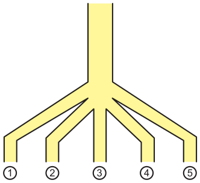
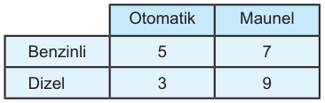
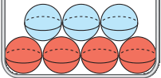
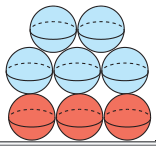
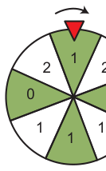
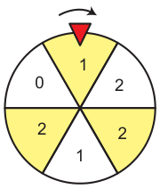

1. Şekildeki düzenekte, A noktasından bırakılan bir top 1, 2,
3, 4 ve 5 nolu bölmeden çıkmaktadır.
A
Buna göre, A noktasından bırakılan bir topun 4
numaralı bölmeden çıkma olasılığı kaçtır?
A) 2
1 B) 3
1 C) 4
1 D) 5
1 E) 6
1
2. 24 tane otomobil olan bir galerideki otomobillerin benzinli,
dizel, otomatik vites ve manuel vites özelliklerine göre
sayıca dağılımı aşağıdaki tabloda verilmiştir.
Buna göre, bu galeriden seçilen bir aracın dizel ve
otomatik olma olasılığı kaçtır?
A) 24
5 B) 1
8 C) 12
5 D) 24
7 E) 8
3
3. Aşağıda 1. torbada 3 mavi 4 kırmızı, 2. torbada 5 mavi
3 kırmızı top vardır.
1. torba
2. torba
İki torbadan aynı anda bir top çekiliyor.
Buna göre, çekilen topların aynı renk olma olasılığı
kaçtır?
A) 56
35 B) 56
29 C) 56
27 D) 1
4 E) 8
7
4. Biri 8 diğeri 6 eş bölüme ayrılmış iki çark aynı anda ok
yönünde döndürüldüğünde, iki çark kırmızı renkli oklar
birer bölüm gösterecek şekilde duruyor.
2
Buna göre, çevrilen iki çark durduğunda kırmızı
okların gösterdiği bölümlerdeki sayıların toplamının
2 olma olasılığı kaçtır?
A) 6
1 B) 24
5 C) 4
1 D) 24
7 E) 2
1
1.D 2.B 3.C 4.D

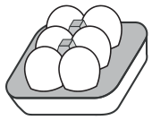
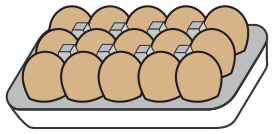
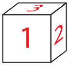
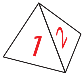
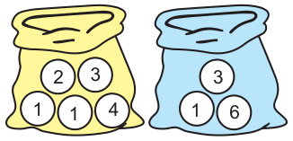
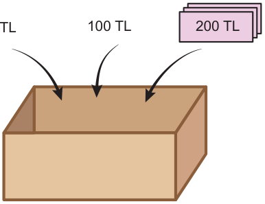

6. Şekil 1'de 6'lı yumurta kolisi beyaz renkte, Şekil 2'de 15'li
yumurta kolisi kahverengi renkte yumurta ile doludur
Şekil 1 Şekil 2
Bu iki kolideki yumurtalardan rastgele alınarak 10'lu
yumurta kolisi oluşturuluyor.
Buna göre, oluşturulan bu 10'lu kolide beyaz renkli
yumurtadan daha az olma olasılığı kaçtır?
A) 2
1 B) 3
2 C) 4
3 D) 5
4 E) 6
5
6. Yüzeylerinde 1'den başlayan ardışık tam sayılar yazılı
olan, biri dört yüzlü diğeri altı yüzlü birer cisim masa
yüzeyine atıldığında, cisimler bir yüzü masa yüzeyine
temas edecek şekilde durmaktadır.
Buna göre, masa yüzeyine temas eden yüzeylerde
yazan sayıların toplamının 4 olma olasılığı kaçtır?
A) 12
1 B) 8
1 C) 6
1 D) 4
1 E) 3
1
7. İki torbada aşağıda gösterildiği gibi üzerlerinde birer
sayı yazan toplar bulunmaktadır. Her top şekilde
görünmektedir.
Buna göre, torbalardan rastgele birer top alındığında
sarı torbadan alınan toptaki sayının, mavi torbadan
alınan toptaki sayıdan küçük olma olasılığı kaçtır?
A) 15
7 B) 15
8 C) 4
3 D) 5
4 E) 6
5
8. 50 TL, 100 TL ve 200 TL lik toplam 36 tane banknottan
oluşan paralar boş kuyuta atılıyor.
Bu kutudan rastgele çekilen bir banknotun 100 TL'lik
banknot olması olasılığı, 200 TL'lik banknot olması
olasılığından küçük, 50 TL'lik banknot olma olasılığından
büyüktür.
Buna göre, kutuda en az kaç TL değerinde para
vardır?
A) 3950 B) 4100 C) 4200
D) 4350 E) 4400
5.B 6.B 7.B 8.D


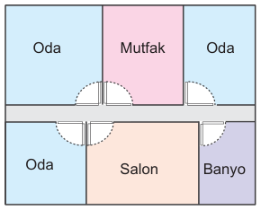
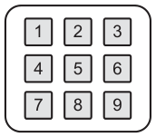

Bu bölümdeki sorular TYT, AYT ve MSÜ sınavlarında çıkmış
ve basın aracılığıyla paylaşılmış bazı sorulardan esinlenerek
hazırlanmıştır. Bu sorular çıkmış soruların bire bir aynısı değildir.
1.
Ev Planı
Sigorta Dolabı
Şekilde bir evin planı ve plandaki her bölmenin elektriğini
açıp kapatan birer sigortanın bulunduğu kutu gösterilmiştir.
Hangi sigortanın hangi bölmeye ait olduğunu bilmeyen
biri, tüm bölmelerin elektriği açıkken sigorta dolabındaki iki
sigortayı kapatıyor.
Buna göre, bir oda ve salonun elektriğinin kesilme
olasılığı kaçtır?
A) 15
1 B) 15
2 C) 5
1 D) 5
2 E) 3
1
2. Zeynep dolabının şifresini oluşturmak için şekildeki tuşları
kullanarak her biri farklı satırda olacak şekilde 3 sayıyı
rastgele seçiyor.
Buna göre, Zeynep’in seçtiği sayıların tamamının çift
sayı olma olasılığı kaçtır?
A) 27
1 B) 27
2 C) 9
1 D) 29
5 E) 3
1
1.C 2.B

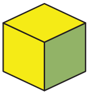
1. Beyaz, sarı ve mavi renk yanabilen bir ampül alan Semih,
ampülün düğmesine 20 kez bastığında yanan renkler
aşağıdaki tabloda verilmiştir.
Renk Beyaz Sarı Mavi
Sayı 8 7 5
Buna göre, Semih düğmeye bastığında ampülün sarı
yanma olasılığı kaçtır?
A) 1
4 B) 2
5 C) 3
5 D) 20
7 E) 20
9
2. Havaya atılan iki zarın üst yüzüne gelen sayıların
çarpımının 4 ile bölünebilme olayının teorik olasılığı
kaçtır?
A) 12
7 B) 18
5 C) 18
7 D) 36
5 E) 36
11
3. Metin Okulları 12. sınıflarının A ve B şubelerinde bulunan
kız ve erkek öğrenci sayıları aşağıdaki tabloda verilmiştir.
A B
Kız 12 8
Erkek 4 12
12. sınıflardan bilgisayar kurası ile bir öğrenci seçilecektir.
Seçilen bu öğrencinin A sınıfından kız öğrenci olma
olasılığı kaçtır?
A) 6
1 B) 3
1 C) 5
2 D) 4
1 E) 4
3
4. Aşağıdaki tabloda bir sınıfta okul servisiyle veya yürüyerek
gelen kız ve erkek öğrencilerin olduğu tablo verilmiştir.
Kız Erkek
Servis 8 6
Yürüyerek 3 4
Buna göre, sınıftan seçilen bir öğrencinin okula
servisle gelen veya erkek öğrenci olma olasılığı
kaçtır?
A) 7
2 B) 7
3 C) 7
4 D) 7
5 E) 7
6
5. Şekilde iki yüzü sarı geri kalan yüzü yeşil boyalı bir küp
gösterilmiştir.
Bu küp, düz bir zemin üzerine atıldığında sarı yüzey
üzerine düşme olasılığı kaçtır?
A) 6
1 B) 5
1 C) 4
1 D) 3
1 E) 2
1
1.D 2.C 3.B
4. E 5.D

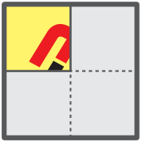
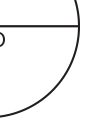
6. Aşağıda Metin Yayınları logosu ile Şekil 1'deki gibi 4
parçalık bir yapboz oluşturulmuştur.
Şekil 1 Şekil 2
Yapbozun 3 parçası çıkarıldığında Şekil 2'deki görünüm
oluşuyor. Daha sonra bu üç parça Şekil 2'deki boşluklara
rastgele yerleştiriliyor.
Buna göre, parçaların doğru yerleştirilme olasılığı
kaçtır?
A) 6
1 B) 5
1 C) 3
1 D) 3
2 E) 6
5
7. Biri 4 diğeri 2 eş bölmeye ayrılmış şekildeki çarklarda her
bölmeye bir sayı yazılmıştır. Kırmızı oklar saat yönünde
O noktası etrafında döndürüldüğünde, bir süre rastgele
dönen kırmızı oklar bir sayıyı gösterecek şekilde duruyor.
1 2
1
4 3
O O
2
Buna göre, duran kırmızı okların gösterdiği sayıların
çarpımının çift olma olasılığı kaçtır?
A) 6
1 B) 5
1 C) 3
1 D) 3
2 E) 4
3
8. Metin futbol takımının yaptığı 36 maçın sonuçları
aşağıdaki tabloda verilmiştir.
Kazandığı Kaybettiği Berabere Kaldığı
Yaptığı Maç
Sayısı 15 12 9
Buna göre, Metin futbol takımının 37. maçını kazanma
olasılığı kaçtır?
A) 9
4 B) 9
5 C) 12
5 D) 18
7 E) 4
1
9. 6 eş dilime bölünmüş bir çarkın her dilimine farklı bir sayı
şekildeki gibi yerleştirilmiş olup çark döndürüldüğünde bir
süre dönen çark kırmızı renkli ibre bir sayıyı gösterecek
şekilde durmaktadır. Şekildeki kutuda üzerlerinde bir sayı
yazan 6 top vardır.
1
2
2
3 3 4
4
5
5 6
6
Ali bu çarkı döndürüyor ve kutudan rastgele bir top çekiyor.
Buna göre, Ali'nin kutudan çektiği topta yazan sayının,
çark durduğunda kırmızı ibrenin gösterdiği sayı ile eşit
olma olasılığı kaçtır?
A) 6
1 B) 5
1 C) 3
1 D) 3
2 E) 4
3
6.A 7.E 8.C 9.A

10. Bir madeni para atma deneyinin 50 tekrarı sonucunda
çıktıların sıklık dağılımı aşağıdaki grafiklerden
hangisindeki gibi olabilir?
Sıklık
Çıktılar
Yazı 0
10
20
30
40 50
Tura
A) Sıklık
Çıktılar
Yazı 0
10
20
30
40 50
Tura
B)
Sıklık
Çıktılar
Yazı 0
10
20
30
40 50
Tura
C)
Sıklık
Çıktılar Yazı 0
10
20
30
40 50
Tura
E)
Sıklık
Çıktılar
Yazı 0
10
20
30
40 50
Tura
D)
11. İki adet madeni para atma deneyi 100 kez
tekrarlandığında;
• çıktılardan ikisinin tekrarlanma sayıları 12 ve 20,
• iki paranın yazı gelme olasılığı 25 'tir.
• iki paranın tura gelme olasılığı 1 5'ten büyüktür.
Buna göre, iki paranın tura gelme olasılığı kaçtır?
A) 25
6 B) 25
7 C) 25
8 D) 25
9 E) 5
2
12. Bir adet madeni para ve bir adet zar atma deneyi 50
kez tekrarlandığında her çıktının en az 2 kez geldiği
bilinmektedir.
Buna göre, paranın yazı ve zarın 6 gelme olasılığı en
çok kaçtır?
A) 25
6 B) 25
7 C) 25
8 D) 25
14 E) 5
3
13. Bir zar atma deneyinin 150 tekrarı sonucunda çıktıların
sıklık dağılımını gösteren grafikten bir çıktı silindiğinde
aşağıdaki grafik elde ediliyor.
Sıklık
Çıktılar 1 0
10
20
30
40
50
2 3 4 5
Buna göre, bu tekrarlı deneyde zarın çift sayı gelme
olasılığı kaçtır?
A) 6
1 B) 3
1 C) 5
2 D) 4
1 E) 4
3
10.D 11.B 12.D 13.C